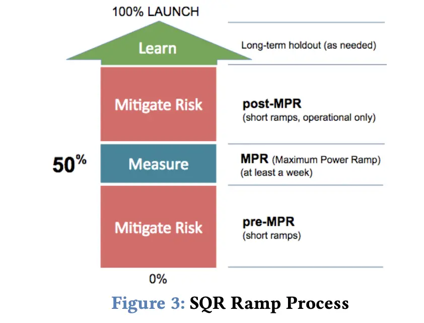
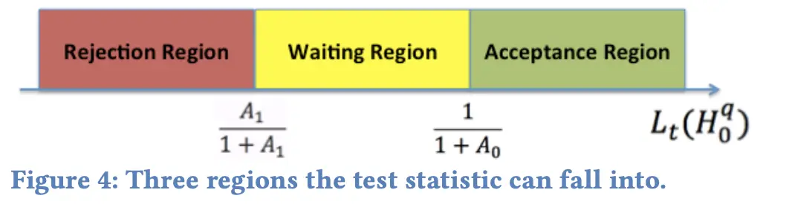
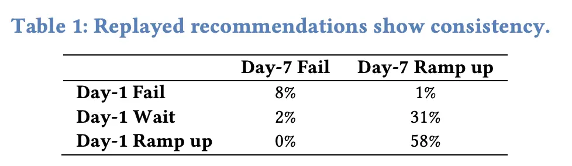
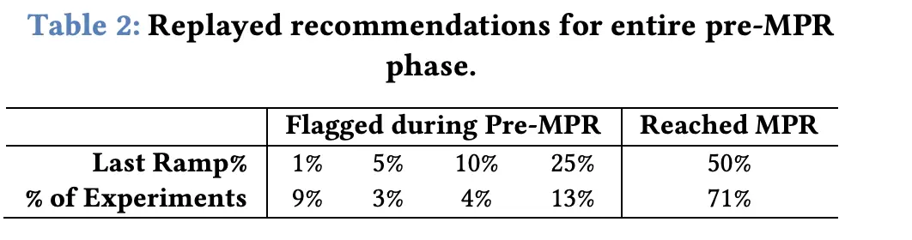

背景
为了加速实验迭代，需要兼顾：速度、质量、风险，Linkin提出了SQR框架：SQR: Balancing Speed, Qality and Risk in Online Experiments。
1. SQR FRAMEWORK
1.1. 关于实验放量的三个误区
误区#1：让实验一直跑直到显著
- 多重检验导致的假阳性问题；
- 样本量随时间增加速度越来越慢。

误区#2: 小流量实验的消耗很低
长期的小流量实验消耗很大：
- 机会消耗：让创新变少变慢
- 平台消耗：运行实验数更多
- 商业消耗：命中用户长期处于较差体验导致流失
误区#3：10%流量就够了
许多实验都是面向用户子集，而且付费相关的指标需要更大量的用户
2.2. SQR原则
做实验的原因：定量测量、减少风险、学习用户
Maximun Power Ramp(MPR)：最大power的放量

原则#1：风险可接受，尽快放量到MPR
风险影响因素：
- 先验信念
- 采样数据结果
- 转换率：实验影响的用户比率
原则#2：MPR阶段等待足够的时间
至少一周，存在burn-in效果时更久
原则#3：post-MPR阶段尽快结束
原则#4：仅在研究目标明确下才进行长期观察实验
2.放量推荐器
负责两项任务：1.指引ramps进入MPR阶段；2.发出加速MPR的信号。
2.1. MPR前放量
在风险可承受之内，尽快放量到MPR阶段。
2.1.1. 风险和可承受风险
将流量放至q的风险为(其实就是treatment对大盘影响的估计)：
\[R(q) = |\delta| * g(r) * h(q)\]
其中： \[\delta = \frac{treatment mean - control mean}{control mean}\]
是影响效果， \[g(r) = \begin{cases} & r, r >= r_0 \\ & r_0, r < r_0 \end{cases}\]
是左截断的触发率， \[h(r) = \begin{cases} & q, q >= q_0 \\ & q_0, q < q_0 \end{cases} \]
是左截断的放量比。
如果满足： \[R(q) <= \tau\]
就认为风险是可承受的。
关于\(\tau\)的选择，不同指标选择不同（todo）
2.1.2. 假设检验
\(Q = \{q_1, q_2, ...\}\)为可能的放量比，在linkedIn一般{1%, 5%, 10%, 25%, 50%}。
假设模板： \[H_0^q : R(q) <= \tau \\ H_0^q : R(q) > \tau\]
2.1.3. 贯序检验
使用Generalized Sequential Probability Ratio Test (GSPRT)，任意时刻t的检验统计量： \[L_t(H_k^q) = \frac{\sup_{H^q_k}\pi_kf_{k}^{t}(X^t)}{\sum_{j=0}^1\sup_{H^q_j}\pi_jf_{j}^{t}(X^t)}, k=0,1\]
其中\(f_{k}^{t}\)是似然函数，\(X^t = (X^t_1,X^t_2,...)\)是t时刻用户级别的指标值，\(\pi_k\)是\(H_k\)的先验概率。
在GSPRT下，\(H^q_k\)被接受的条件为： \[L_t(H^q_k) > \frac{1}{1 + A_k}\]
由于后验概率\(L_t(H^q_0) + L_t(H^q_1) = 1\)，所以要选择\(0 < A_k < 1\)以保证最多有一个假设被接受。

基于大数定理和终极极限定理，组间均值差\(\Delta\)的分布近似正态，方程转化为（此处方法用的是贝叶斯）： \[L_t(H_k^q) = \frac{\sup_{H^q_k}\pi_kexp(-\frac{(\Delta - \delta)^2}{2s^2})}{\sum_{j=0}^1\sup_{H^q_j}\pi_jexp(-\frac{(\Delta - \delta)^2}{2s^2})}\] 其中\(s^2\)是\(\Delta\)的方差，\(\delta\)来自假设模板。
\(H_0\)对应的\(A_0\)越高，越容易接受原假设，产生二类错误；
\(H_1\)对应的\(A_1\)越高，越容易拒绝原假设，产生一类错误。
linkedIn的选择：\(A_0 = 0.2, A_1 = 0.1\)。
最终流程：
1). 如果任意环节q，\(L_t(H^q_1) > \frac{1}{1 + A_1}\)，拒绝原假设，不能继续放量； 2). 如果某些环节，\(L_t(H^q_0) > \frac{1}{1 + A_0}\)，接受原假设，放量到其中最大q阶段； 3). 其他情况，继续观察到t+1，根据\(L_(t+1)\)进行决策； 4). 如果直到\(t = 7\)都没满足条件，建议放量。
2.1.4. 多个指标情况
通过控制FDR来矫正多重检验问题，通过类似Benjamini-Hochberg方差来处理\(L_t(H_1^q)\)：
1). 将M个指标结果\(L_t^{(1)}(H_1^q),\ L_t^{(2)}(H_1^q),\ L_t^{(3)}(H_1^q)...\)进行降序排列； 2). 按顺序进行比较： \[L_t^{(m)}(H_1^q) > \frac{1}{1 + \frac{mA_1}{M}}\]
至少一个指标满足条件时，接受\(H_1^q\)。
所以放量条件为：
1). \(H_1^q\)未被接受； 2). 主要指标都接受\(H_0^q\)。
2.2. MPR阶段的放量
MPR之前主要关注规避风险，MPR阶段关注速度和决策质量。
2.2.1. MPR时长
至少一周的时间
2.2.2. 指标的影响
重要的指标：任意指标p小于0.05，就需要仔细研究；
其他指标：显著性为0.1，并控制错误发现率，如果负向显著就不建议放量到100%。
2.2.3. 其他发现的警告
如果有其他发现，比如burn-in效应、inconsistent results、heterogeneous treatment效应等。这些应该被自动计算，并给出更好、更全面的推荐方案。
2.3. 评估
分两方面评估：
- 一致性 理想情况下，t阶段放量结论，在t+1阶段依然符合；
- 速度 理想情况下，用更少的阶段、合计更短的时间，到达MPR。
LinkedIn收集了484个去年在MPR阶段满一周的实验。由于他们的放量各异，采用了50%流量阶段进行模拟，pre-MPR前取\(q\in \{1\%,5\%,10\%,25\%\}\)。

全阶段的模拟： 